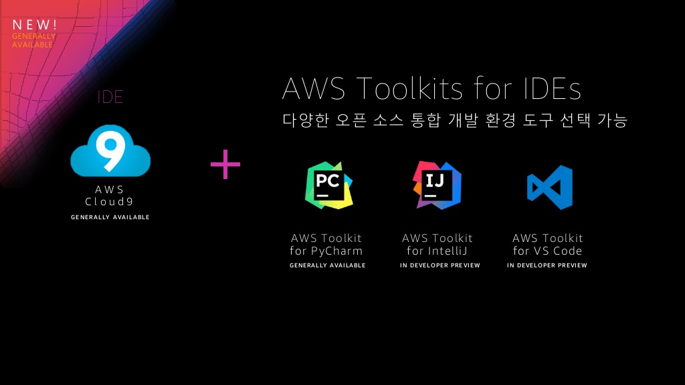
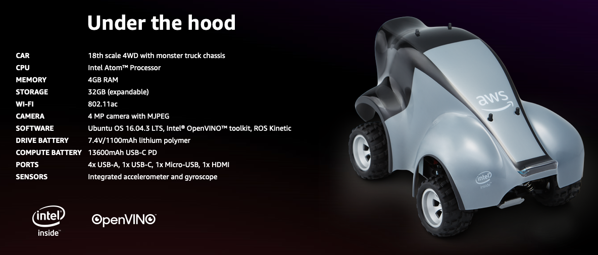

AWS re:Invent 는 AWS(Amazon Web Service)의 대표적인 컨퍼런스로 새로운 서비스와 기능을 발표하는 행사입니다. 또한 클라우드 컴퓨팅 시장을 선도하는 회사답게 가장 규모가 크고 인기가 많은 행사입니다. 이번 행사에서는 4일간의 키노트 세션과 전야제에서 100개 이상의 서비스가 새로 출시되었습니다. 기존 서비스는 더 정교해지고, 새로운 서비스로 지원하는 영역은 더 넓어졌습니다.
물론 모든 서비스를 모두 알 필요는 없습니다. 이 많은 서비스를 모두 알고 잘 다룰 수도 없을 뿐더러 그럴 필요도 없기 때문입니다. 하지만 신규 서비스를 살펴보면서 AWS 가 어떤 방향으로 가고 있는지, 클라우드 컴퓨팅이 어떻게 발전할지 살펴보는 건 의미있는 일입니다.
이번 포스팅에서는 분야별로 새로 출시된 주요 AWS 서비스를 살펴보겠습니다.
- 글로벌 인프라
- 컴퓨팅
- 스토리지
- 데이터베이스
- 머신 러닝과 인공 지능
- 보안 및 클라우드 하이브리드
- 차세대 산업 (IoT, 로봇, 우주 산업)
글로벌 인프라 Global Infrastructure
먼저 글로벌 인프라부터 살펴보겠습니다. AWS 는 단순 리전 확장 뿐 아니라 인프라 성능과 가용성을 높이고, 여러 네트워크를 쉽게 관리할 수 있는 서비스를 제공합니다.
- 글로벌 리전 확장
- AWS Global Accelerator
- AWS Transit Gateway
글로벌 리전 확장

AWS 는 전 세계에 데이터 센터를 보유하고 있습니다. 이 데이터 센터는 리전(Region)과 가용 영역(Availability Zone, AZ)으로 나뉘어져 있는데요. 데이터 센터를 지역별 물리적인 위치로 나누고, 리전 안에서도 가용 영역을 나눕니다. 따라서 인스턴스의 장애가 다른 곳으로 퍼지는 것을 막고 글로벌 서비스 시 원하는 지역에 빠른 서비스가 가능합니다.

AWS 는 글로벌 리전을 확장해 19개의 리전과 57개의 가용 영역을 구축했습니다. 앞으로 바레인, 케이프타운, 홍콩, 스톡홀름 등 4개의 리전을 추가할 계획이라고 합니다. 우리나라에는 2016년부터 서비스된 아시아 태평양 서울 리전이 있습니다. 또한 AWS 는 전 세계 150개 이상의 글로벌 PoP와 89 Direct Connect 전용선 연결 지점, 100GbE 네트워크망을 운영 중입니다.
따라서 AWS 를 통해 더 빠르고 안전한 서비스를 제공할 수 있습니다. 물론 리전과 가용 영역을 최대한 활용할 수 있는 설계가 필요합니다. 비용은 더 들겠지만 멀티 리전으로 구축해야만 AWS 장애 시 피해를 최소화할 수 있습니다.
AWS Global Accelerator

글로벌 애플리케이션의 경우 사용자의 위치에 따라 여러 네트워크를 거치면서 성능에 영향을 줍니다. 또한 중간에 네트워크에 문제가 생길 경우 서비스가 제공되지 않을 수도 있죠.

AWS Global Accelerator 는 AWS 글로벌 네트워크를 활용해 경로를 최적화해서 성능을 높이고, 지속적인 모니터링으로 가용성을 제공합니다. 따라서 재해 복구에 대응하고, 성능 개선과 네트워크 확장 등을 손쉽게 구성할 수 있습니다.
AWS Transit Gateway

Amazon VPC(Amazon Virtual Private Cloud)는 사내 시스템과 같은 프라비잇 클라우드를 손쉽게 구축할 수 있는 서비스입니다. AWS 상에서 처리할 수 있는 워크로드가 많아지고 확장되면서 VPC 끼리 혹은 기존의 온프레미스 네트워크와 연결이 필요해지는데요. 기존에는 VPN 연결을 중앙에서 관리할 수 없어서 연결이 많아질수록 관리하기가 매우 복잡했습니다.

AWS Transit Gateway 는 Amazon VPC와 온프레미스 네트워크를 손쉽게 연결하고 중앙에서 모니터링하고 관리하는 기능을 제공합니다. 따라서 확장하기 쉽고 아키텍처를 간소화할 수 있습니다.
컴퓨팅 Computing
컴퓨팅 분야에서는 자체 칩셋을 이용한 인스턴스와 서버리스에 대한 지원이 돋보이네요. 아래 주제에 대해 살펴봅니다.
- EC2 Instance
- Container
- Serverless
EC2 Instance
Amazon Elastic Compute Clode(EC2)는 AWS 의 대표적인 서비스로 VM 인스턴스를 제공합니다. 인스턴스 타입을 다양하게 제공해서 사용자가 원하는 용도에 맞게 선택할 수 있습니다. 같은 인스턴스라도 vCPU, 메모리, 스토리지, 네트워크 성능 등에 따라 세부적으로 선택할 수 있습니다.[1]
| 용도 | 인스턴스 모델 | 설명 |
|---|---|---|
| 범용 | M5, M5a, M5d, M4 | 균형 있는 성능 제공 |
| 범용 + 버스팅 | T3, T3a, T2 | 균형 있는 성능 + CPU 사용량 버스팅 |
| 컴퓨팅 | C5, C5d, C4 | 컴퓨팅 집약적 워크로드에 최적화 |
| 메모리 | R5, R5a, R5d, R4 | 메모리 사용에 최적화 |
| 대용량 메모리 | X1, X1e | 대규모 in-memory 사용에 최적화 RAM 요금이 가장 저렴 |
| HPC 전용 | Z1d | 고성능 컴퓨팅 제공 |
| 범용 GPU | P3, P2 | GPU 컴퓨팅 애플리케이션에 적합 (머신 러닝, 딥 러닝 등) |
| 그래픽 최적화 | G3 | 그래픽 집약적 워크로드에 최적화 |
| FPGA | F1 | FPGA(Field Programmable Gate Array) 용도에 따라 커스터마이징할 수 있는 칩 |
| 스토리지 | D2 | 우수한 디스크 처리량 제공 |
| 빅데이터 | H1 | 균형 있는 성능과 높은 디스크 처리량 제공 |
| 고속 I/O | I3 | 고성능 NVMe(Non-Volatile Memory Express) SSD 지원 NoSQL, In-memory DB, Elasticsearch 등에 적합 |
| 베어메탈 | I3m | 가상화 되지 않은 베어 메탈(Bare Metal) 인스턴스 |
인스턴스를 보시면 a 또는 d 가 붙어 있는 모델을 확인할 수 있는데요, 뒤에 a 가 붙은 모델(M5a, R5a)은 AMD 기반으로 비용을 절감할 수 있는 모델입니다. 그리고 d 가 붙은 모델(M5d, R5d, Z1d, C5d)은 호스트 서버에 NVMe SSD 를 연결해 빠른 입출력을 제공하는 모델입니다.
그리고 이번 행사에서 두 개의 새로운 인스턴스를 공개했습니다.
EC2 A1 Instance
AWS 는 비용을 절감할 수 있고 클라우드 컴퓨팅에 최적화된 칩을 직접 만들기로 합니다. 2015년 인수한 Annapurna Labs 을 통해 Arm 기반의 맞춤형 CPU를 개발하고 이를 지원하는 첫 번째 인스턴스를 공개했습니다.
EC2 A1 Instance 는 웹 서버 및 컨테이너형 마이크로서비스에 최적화된 인스턴스로 인스턴스 확장 시 45%까지 비용을 절감할 수 있습니다.
EC2 C5n Instance
EC2 C5n Instance 는 차세대 컴퓨팅 최적화 모델인 C5 인스턴스에 100Gbps 고성능 네트워킹을 추가한 인스턴스입니다. 따라서 대규모 작업을 신속하게 처리하고 네트워크 작업 부하의 비용을 절감할 수 있습니다.
Elastic Fabric Adapter
이 외에도 새로 출시된 Elastic Fabric Adapter(EFA)는 EC2 인스턴스를 위한 네트워크 인터페이스입니다. 애드온으로 인스턴스에 추가해서 사용할 수 있는 기능인데요. 전산 유체 역학, 기후 모델링, 저수지 시뮬레이션 등 인스턴스 간 통신이 필요한 고성능 컴퓨팅(High-Performance Computing,HPC) 애플리케이션을 지원합니다.
Container
현재 AWS에서는 컨테이너를 사용하는 몇 가지 옵션을 제공하고 있습니다.
Amazon ECS

Amazon Elastic Container Service(ECS)는 도커(Docker) 컨테이너를 관리하는 오케스트레이션 서비스로 컨테이너화한 애플리케이션을 쉽게 실행하고 확장 및 축소하는 기능을 제공합니다.
AWS Fargate

AWS Fargate 는 AWS EC2와 같은 컴퓨팅 엔진입니다. 위의 Amazon ECS 를 사용할 때 EC2와 Fargate 중 선택을 할 수 있는데요. Fargate를 사용하면 가상 머신 클러스터에 대한 프로비저닝, 구성, 확장 등 클러스터 관리를 자동으로 처리해주기 때문에 애플리케이션을 개발하는데 집중할 수 있습니다.
Fargate는 현재는 ECS 만 지원하지만 향후 EKS 도 지원할 예정이라고 합니다.
AWS EKS

Amazon Elastic Container Service for Kubernetes(EKS)는 AWS 상에서 쿠버네티스(Kubernetes) 클러스터를 제공해주는 서비스로 제어 영역(Control Plane)을 자동으로 관리 및 업데이트 해줍니다. 따라서 사용자는 워커 노드를 프로비저닝하고 EKS의 엔드포인트에 연결하기만 하면 됩니다.
AWS App Mesh
마이크로서비스 아키텍처는 장점도 많지만 작은 서비스간 연결이 많아지면서 복잡해지는 단점도 있습니다. 이를 극복하고 보완하기 위한 설계와 툴이 나오면서 마이크로서비스도 발전하고 있는데요. 그 중 하나가 서비스 메시(Service Mesh)라는 개념으로 마이크로서비스의 커뮤니케이션을 보다 쉽게 모니터링하고 관리할 수 있는 방법입니다.

마이크로서비스는 여러 서비스가 서로 호출하는 구조로 되어 있습니다. 문제의 시작은 이겁니다. 이 중 하나의 서비스에서 장애가 나면 어떻게 될까요? 장애는 해당 서비스 자체에서만 끝나는 것이 아니라 연쇄적으로 퍼지게 됩니다.

해결책은 서비스간 호출을 바로 하는 것이 아니라 중간 다리를 거쳐서 호출하고, 장애 발생 시 중간 다리에서 연결을 끊어버리는 겁니다. 이를 써킷 브레이커 패턴(Circuit Breaker Pattern)이라고 합니다. 회로 차단기라는 뜻이죠.

이와 비슷한 작업을 인프라 레벨에서 풀 수 있는 것이 바로 서비스 메시입니다. 마이크로서비스는 각자 프록시를 옆에 두고 해당 프록시를 거쳐서 통신합니다. 이를 오토바이의 사이드카와 비슷하다고 해서 사이드카 패턴(Sidecar Pattern)이라고 합니다. 이렇게 서비스마다 프록시를 다 붙여놓으면서비스간 오고 가는 정보를 수집할 수 있고 라우팅, 헬스체킹, 로드 밸런싱, 써킷 브레이킹 등 다양한 작업을 할 수 있어 유용합니다. 프록시로는 Envoy 가 많이 사용됩니다.

문제는 마이크로서비스가 워낙 많다보니 프록시의 개수 또한 많아지고 관리가 어려워지는 점입니다. 그래서 프록시를 중앙에서 관리하도록 나온 툴이 Istio 입니다.

새로 출시된 AWS App Mesh 는 추가적인 도구 설치 없이 ECS 및 EKS 를 기반으로 서비스 메시를 제공합니다. 따라서 마이크로서비스 모니터링과 제어를 쉽게 할 수 있습니다.
AWS Cloud Map

새로 출시된 AWS Cloud Map 은 리소스 관리 서비스입니다. 마이크로서비스는 트래픽에 따라 동적으로 확장되거나 축소되다보니 리소스 이름과 위치를 수동으로 관리하기가 어렵습니다. AWS Cloud Map 은 이를 중앙에서 등록해 관리할 수 있어 애플리케이션 버전이나 배포 환경에 따라 맞춤형 리소스를 구성할 수 있습니다.
Serverless
AWS Lambda 는 서버리스(Serverless) 컴퓨팅의 선두주자입니다. 저도 처음에 써보고 놀랐던 기억이 나네요. 서버 관리 없이 코드만 올리면 각종 트리거(이벤트)를 기반으로 실행되는 간단한 방식입니다. 단순히 메시지 큐만 사용하는 것이 아니라 AWS 내 각종 서비스를 이벤트 소스로 사용할 수 있어서 큰 인기를 얻었습니다. 단점으로는 코드 실행 시 VM이 생성되어 런타임을 구성하고 코드가 실행되기 때문에 처음 실행 시 VM을 부팅하는 시간이 걸린다는 점이 있는데요. 이에 맞춰 AWS 에서도 Lambda 의 단점을 보완하고 기능을 대폭 강화했습니다.
- IDE
- Language Support
- Programming Models
- Workflows
- Firecracker
AWS Toolkits for IDEs

람다를 사용하면서 불편한 점 중 하나는 코드를 외부에서 작성 후 업로드 해야하는 점이었습니다. 자바스크립트 같은 경우는 람다 콘솔에서 바로 작성할 수 있지만 자바 같은 경우는 소스를 말아서 올려야했죠. 그래서 AWS 는 브라우저 기반의 IDE인 AWS Cloud 9 을 출시했습니다. 서버리스 개발에 유용하고 EC2 인스턴스에 쉽게 접근할 수 있는 터미널도 함께 제공되었습니다.
하지만 개발자들은 원래 익숙한 툴을 좋아하기 마련이죠. 그래서 AWS Toolkit for IDEs 라고 기존 개발 환경과 통합을 제공합니다. 기존에 제공하던 AWS Toolkits for Eclipse 와 AWS Toolkits for Visual Studio 외에 새로 PyCharm, IntelliJ, Visual Studio Code를 지원합니다. 이에 기존에 작업하던 환경 그대로 서버리스 개발을 하는 것이 더 쉬워졌습니다.
커스텀 런타임 지원
기존에 지원하는 자바, Node.js, C#, 파이썬, Go 외에도 커스텀 런타임을 지원합니다. Linux 호환 언어라면 런타임을 활용할 수 있습니다. 이번에 람다에 새로 추가된 Ruby 도 이런 방식으로 지원했다고 하네요. 따라서 Erlang, elixir, Cobol 등 다양한 언어를 지원할 수 있게 되었습니다.
Lambda Layers
람다는 함수에서 사용하는 라이브러리와 디펜던시를 같이 말아 업로드해서 사용합니다. 그러다보니 마이크로서비스 애플리케이션을 구성할 경우 이러한 공유 코드, 라이브러리, 디펜던시가 각각 들어가 중복됩니다. 그러다보니 수정이 필요한 경우 모든 람다 함수를 수정해야하는 문제가 생겼는데요. 이런 부분을 별도의 레이어로 분리하는 Lambda Layers 기능을 지원합니다. 따라서 런타임 환경을 손쉽게 확장하고 관리할 수 있습니다.
Serverless Application Repository

Serverless Application Repository 는 서버리스 애플리케이션을 공유하고 판매하는 마켓 플레이스입니다. AWS 외에도 여러 사용자가 올린 애플리케이션을 확인할 수 있습니다.
Nested Applications
서버리스 아키텍처가 커지면서 생산성을 높일 방법이 필요해졌습니다. Nested Applications 도 그런 방법 중 하나입니다. 서버리스 애플리케이션을 다른 서버리스 애플리케이션의 컴포넌트처럼 사용해 개발 중복을 줄이고 생산성을 높여줍니다.
Application Load Balancer Support for Lambda
람다의 이벤트 소스로 로드 밸런서가 추가되었습니다. 로드 밸런서가 컨텐츠 기반 라우팅 규칙을 지원하게 되면서 요청 내용에 따라 다른 람다 함수를 호출할 수 있게 된 것인데요. 따라서 기존에 로드 밸런서를 사용하는 웹 애플리케이션에도 쉽게 람다를 추가할 수 있습니다.
Web Socket support for API Gateway

Amazon API Gateway 에서 Web Socket 을 지원하면서 웹 소켓 연결을 이용해 람다 함수를 호출할 수 있게 되었습니다. 따라서 실시간 양방향 통신 애플리케이션을 쉽게 구축할 수 있습니다.
Step Functions + API Connectors

AWS Step Functions 는 람다 함수를 단계적으로나 병렬적으로 실행할 수 있도록 워크플로를 설계하고 모니터링할 수 있는 서비스입니다. 이번엔 워크플로를 지원하는 AWS 서비스가 확대되어 더 다양한 방식으로 사용할 수 있게 되었습니다.
Amazon Managed Streaming for Kafka

카프카(Kafka)는 비동기 처리를 위한 대표적인 오픈 소스 분산 메시징 시스템입니다. 위 그림처럼 스트리밍 데이터를 읽어 버퍼링하고 필요한 애플리케이션에게 공급하는 역할을 하기도 합니다. AWS 에서 제공하는 카프카는 카프카를 사용하던 기존 코드를 변경 없이 적용할 수 있도록 호환성을 제공하고, 별도 주키퍼(Zookeeper) 노드 필요 없이 클러스터를 관리해줍니다. 또한 가용 영역 3개를 이용한 롤링 업그레이드로 패치도 지원합니다. 따라서 기존 카프카를 이용하던 애플리케이션이나 새로 구축하는 애플리케이션에서 관리에 대한 걱정 없이 카프카를 쉽게 사용할 수 있습니다.
Firecracker

위에서 말씀드린 것처럼 람다 함수를 실행 시 VM이 뜨면서 해당 코드를 실행하게 됩니다. VM은 컨테이너 기반보다 보안은 우수하지만 처음 부팅 시 느리고 비교적 리소스를 효율적으로 사용하기 어렵습니다. 람다 출시 이후 사용자들이 람다를 다양하게 사용하고 인기를 얻으면서 람다를 속도와 리소스 효율 면에서 개선할 필요가 생겼습니다.
이에 AWS는 기존의 컨테이너 방식이나 VM 방식이 아닌 새로운 가상화 기술을 오픈 소스로 공개했습니다. Firecracker 는 서버리스 컴퓨팅에 최적화된 microVM으로 VM 보안성은 유지하되 컨테이너의 빠른 확장과 리소스 효율성을 더했습니다. 가상화되지 않은 환경에서 1초 이내로 microVM을 시작할 수 있고 microVM 당 5MiB 메모리를 사용해 오버헤드가 낮습니다. 오픈 소스이지만 이미 AWS Lambda 와 AWS Fargate 에 적용되어 검증되었으며 앞으로도 많은 발전이 기대되는 프로젝트입니다.
스토리지 Storage
다음은 스토리지입니다. 스토리지는 용도를 다양화하고 데이터 이동에 편의성을 증가시켰습니다.
S3 신규 클래스
Amazon Simple Storage Service(S3)는 데이터를 저장하는 스토리지 서비스입니다. S3는 데이터를 저장하고 얼마나 자주 사용하는지에 따라서 클래스를 구분하고 비용을 정산하기 때문에 적절한 용도에 따른 스토리지 클래스를 선택하는 것이 좋습니다. 보통 자주 사용하지 않는 것은 싼 가격에 많은 데이터를 저장할 수 있지만 속도는 느리고, 자주 사용하는 것은 비용이 높지만 속도는 빠르게 구성되어 있습니다.
새롭게 추가된 신규 클래스로는 인공지능을 기반으로 사용 빈도에 따라 자동으로 클래스를 조정해 비용을 최적화하는 S3 Intelligent-Tiering 과 기존 백업용 클래스인 S3 Glacier 보다 더 저렴한 S3 Glacier Deep Archive 가 있습니다. 따라서 총 6개의 스토리지 클래스를 제공합니다.
| 이름 | 설명 |
|---|---|
| S3 Standard | 범용 스토리지 |
| S3 Intelligent-Tiering | 인공지능을 기반으로 사용 빈도에 따라 자동으로 클래스를 조정해 비용을 최적화 |
| S3 Standrad-Infrequent Access | 자주 사용은 안하지만 필요할 때는 빠르게 액세스 |
| S3 One Zone-Infrequent Access | 가용성을 위해 3AZ에 저장하는 스탠다드와 달리 하나의 AZ에 저장해 빠르게 작업 가능 |
| S3 Glacier | 자주 사용하지 않는 데이터를 보관하기 위한 아카이브용 스토리지 |
| S3 Glacier Deep Archive | 장기간 보관에 적합한 최저 비용 스토리지 |
Amazon FSx for Windows File Server

퍼블릭 클라우드에서 Windows 워크로드를 사용하는 비율은 AWS(57.7%)가 Microsoft Azure(30.9%)보다도 높다고 합니다. 이에 완전 관리형 Windows 파일 시스템인 Amazon FSx for Windows File Server 가 새로 출시되었습니다. 따라서 기존에 보유한 애플리케이션 및 윈도우 환경과 완벽하게 호환되는 네트워크 파일 스토리지로 사용할 수 있습니다.
Amazon FSx for Lustre

데이터 레이크, HPC(고성능 컴퓨팅), EDA(전자 설계 자동화) 등의 대규모 작업들은 피비바이트(PiB, 125TB) 단위로 데이터를 처리합니다. Lustre 는 이런 고성능 작업을 지원하는 병렬 파일 시스템으로 오픈소스인데요. AWS 는 이를 기반으로 매니지드 파일 시스템인 Amazon FSx for Lustre 를 출시했습니다. 또한 S3 와 통합해서 상대적으로 높은 처리량이 필요하지 않은 분석 전후의 데이터는 S3에 보관할 수 있습니다.
AWS DataSync
.d10b7228ccf2256a072408532a4650720248e1c4.png)
AWS DataSync 는 데이터 이동을 자동 및 가속화해주는 서비스로 Amazon S3, Amazon Elastic File System(EFS), 온프레미스 간에 데이터를 쉽게 이동시키는 서비스입니다. 10Gbps의 빠른 속도로 데이터를 전송할 수 있어 마이그레이션이나 데이터 처리 작업, 재해 복구 등에 사용할 수 있습니다.
AWS Transfer for SFTP

AWS Transfer for SFTP 는 S3에 데이터를 업로드하고 관리할 경우 SFTP(Secure File Transfer Protocol)를 제공하는 서비스입니다. 따로 SFTP 서버를 관리할 필요 없이 제공되는 엔드 포인트를 사용하면 됩니다.
데이터베이스 Database
AWS는 여러가지 DB 서비스를 제공하고 있습니다. 필요에 따라 쉽게 구성할 수 있고 서버를 관리할 필요 없이 확장성, 가용성, 내구성 등을 누릴 수 있습니다.
- Amazon Relational Database Service(RDS) : Oracle, MySQL 등 관계형 DB 서비스를 제공.
특히 MySQL과 PostreSQL과 호환되는 클라우드 최적화 RDB인 Amazon Aurora 서비스 제공. - Amazon DynamoDB : 완전 관리형 NoSQL(Key/Value, Document) DB 서비스
- Amazon ElasticCache : 인메모리 DB인 Redis 와 Memcached 를 완전관리형으로 제공
- Amazon Neptune : 완전 관리형 그래프 데이터베이스.
이번 행사에서는 시계열 데이터와 블록체인 데이터를 처리할 수 있는 제품이 출시되어 더 다양한 데이터베이스를 선택할 수 있게 되었습니다.
Amazon DynamoDB 업데이트
먼저 Amazon DynamoDB 에 몇 가지 기능이 추가되었는데요. 기존에 read/write 용량 산정 문제를 해결하기 위해 트래픽에 따라 자동으로 용량이 조절되는 DynamoDB On-Demand 기능을 추가했습니다. 또한 DynamoDB Transactions 기능 추가로 비관계형 DB에서는 처음으로 ACID 트랜잭션을 지원합니다. 따라서 여러 테이블을 엮어 복잡한 비즈니스 로직을 구현할 수 있게 되었습니다.
Amazon Timestream
IoT 센서 데이터나 DevOps 로그 데이터 등 시간에 따른 변화를 측정하는 시계열(time-series) 데이터는 일반 RDB로 효율적인 처리가 어렵습니다. Amazon Timestream 은 RDB의 1/10 비용으로 하루에 수조 건의 이벤트를 저장하고 분석할 수 있는 완전관리형 시계열 데이터베이스 서비스입니다.
Amazon QLDB

AWS 를 활용해 블록체인을 사용하는 사례가 많아지면서 블록체인 원장을 관리하는 완전관리형 데이터베이스가 출시되었습니다. Amazon Quantum Ledger Database(QLDB)는 기존 RDB를 이용해 원장을 관리할 경우 구축하기 어려운 감사 기능을 제공합니다. 투명하고 변경 불가능하며 암호화 방식으로 검증 가능한 트랜잭션 로그를 제공하고 이러한 로그는 신뢰할 수 있는 중앙 기관에서 소유합니다. 애플리케이션 데이터의 내역을 정확하게 유지 관리할 피룡가 있는 은행 트랜잭션, 보험 청구 계보 확인, 공급망 네트워크에서의 품목 이동 추적 등에 사용됩니다.
Amazon Managed Blockchain

블록체인 관련해서 하나의 서비스가 더 출시되었는데요. Amazon Managed Blockchain 은 Hyberledger Fabric 또는 Ethereum 중에서 선택해 블록체인 네트워크를 쉽게 구축할 수 있는 완전관리형 서비스입니다. 쉽게 확장 가능하고 QLBD와 연동해 데이터를 저장하고 추가 분석할 수 있습니다.
머신 러닝과 인공 지능 ML & AI
머신 러닝과 인공 지능은 다양한 분야에서 혁신을 이끌어내고 있습니다. 특히 고성능 컴퓨터와 스토리지가 필요하기 때문에 클라우드컴퓨팅을 활용하는 것이 효율적인데요. 또한 AWS 는 복잡한 머신 러닝 과정을 줄여주는 플랫폼과 머신 러닝 서비스, 그리고 바로 사용할 수 있는 인공 지능 서비스를 제공합니다. 이번 행사에서 공개된 서비스들을 살펴봅니다.
머신 러닝
Amazon Elastic Inference
딥 러닝(Deep Learning)은 다양한 정보를 축적하는 학습(Learning)과 그 지식을 기반으로 새로운 정보에 답을 스스로 도출해내는 추론(Inference)으로 이루어집니다. 이 중에서 추론 작업은 학습 작업보다 인프라 비용이 훨씬 많이 듭니다. 특히 학습 작업에 사용하는 GPU를 그대로 사용할 경우 효율성은 절반 정도까지 떨어질 수 있습니다. 왜냐하면 추론 작업은 많은 데이터 샘플을 병렬로 배치 처리하는 학습 작업과 달리, 단일 입력으로 GPU 컴퓨팅을 사용하기 때문에 GPU 성능을 완전히 활용할 수 없습니다. 또한 모델에 따라 탄력적으로 리소스를 사용하기 때문에 무조건 큰 GPU 인스턴스를 사용하는 것은 비효율적입니다.
Amazon Elastic Inference 는 기존 Amazon EC2 및 Amazon SageMaker 인스턴스에 필요한 만큼 GPU 가속을 더해 딥 러닝 추론 비용을 최대 75%까지 절감해주는 서비스입니다. 또한 작업량에 따라 인스턴스가 오토스케일링(Auto Scailing)되므로 리소스를 효율적으로 사용할 수 있습니다.
AWS Inferentia
AWS Inferentia 는 머신 러닝 추론을 위해 AWS 에서 커스터마이징한 칩입니다. 추론 작업의 성능은 높이고 비용은 낮추기 위한 칩으로 TensorFlow, Apache MXNet, PyTorch 등 다양한 딥 러닝 프레임워크를 지원할 예정입니다. 또한 Amazon EC2, Amazon SageMaker 인스턴스, 그리고 Amazon Elastic Interface 와 함께 사용할 수 있습니다.
Amazon SageMaker
머신 러닝은 사용하기 위한 프로세스가 상당히 복잡하고 시간이 오래 걸립니다. 먼저 학습 데이터를 수집 및 저장하고, 알고리즘을 선택하고, 데이터를 학습할 인프라를 구축해야 합니다. 오랜 시간 훈련과 학습 모델을 수작업으로 튜닝한 후에 적절한 인프라에 배포하고 운영하는 과정을 거치게 됩니다.
Amazon SageMaker 는 구축, 학습, 배포까지 복잡한 머신 러닝 과정을 줄여주는 완전관리형 플랫폼입니다. 이번 행사에서도 이를 지원하는 다양한 기능이 출시되었습니다.
Amazon SageMaker Ground Truth

머신 러닝 모델이 성공하려면 학습 데이터가 얼마나 품질이 뛰어나고 얼마나 양이 많은지가 중요합니다. 하지만 이런 데이터를 준비하는건 쉽지 않은 일입니다. 특히 모델이 제대로 배울 수 있도록 사람이 수동으로 레이블 작업을 해야합니다. 이는 데이터가 많으면 많수록 시간과 노력이 많이 드는 작업이죠. Amazon SageMaker Ground Truth 는 머신 러닝을 이용해 레이블링을 자동화해서 학습 데이터를 생성하는데 드는 비용을 줄여줍니다. 사용자의 레이블링을 학습해서 점점 더 개선된 레이블링 작업을 수행할 수 있습니다.
Amazon SageMaker Neo

자율 차량의 센서처럼 엣지 디바이스에서 머신 러닝 모델이 동작하려면 작은 사이즈와 빠른 속도가 필요합니다. Amazon SageMaker Neo 는 모델을 자동으로 최적화해서 최대 2배 빠른 성능을 제공합니다. 이미 학습된 모델에서 하드웨어 플랫폼을 선택하기만 하면 됩니다. 빌드가 끝나면 AWS Greengrass 를 이용해 원하는 엣지로 무선 배포할 수 있습니다. Amazon SageMaker Neo 는 앞으로 오픈 소스로 공개될 예정입니다.
Amazon SageMaker RL
딥 러닝은 목표와 데이터에 따라 다양한 학습 방식을 선택할 수 있습니다.
- 지도 학습(Supervised Learning) : 이미 분류된 데이터로 답을 주고 학습해 데이터를 식별
- 자율 학습(Unsupervised Learning) : 분류되어 있지 않은 데이터 또는 답을 알 수 없는 경우 자동으로 특징을 추출하고 패턴을 찾아냄
- 준지도 학습(Semi-supervised Learning) : 지도 + 자율 학습 형태로, 적은 양의 분류된 데이터로 정확성을 향상 시킬 수 있음
- 강화 학습(Reinforcement Learning) : 피드백(보상과 페널티)을 이용해 특정한 목표를 달성시키기 위한 최적의 방법을 스스로 찾아내도록 학습시키는 방법
특히 강화 학습은 게임과 유사한데요, 레이블이 지정된 학습 데이터 없이 게임을 반복하면서 요령을 터득하고 최적의 방법을 스스로 찾아내는 것입니다. 그래서 생각지도 못한 재미있는 행동을 보이기도 한다고 합니다.
Amazon SageMaker RL 은 SageMaker 를 이용해 쉽게 강화 학습을 할 수 있도록 도와주는 툴킷입니다. 인프라는 모두 제공되므로 학습에만 집중할 수 있습니다.
AWS Marketplace for Machine Learning
좋은 알고리즘을 선택하는 것도 중요하겠죠? AWS Marketplace 에서는 SageMaker 에서 바로 사용할 수 있는 알고리즘을 제공합니다. 알고리즘을 검색해 원 클릭으로 신청할 수 있습니다. 또한 가지고 있는 모델을 패키징해서 공유 및 판매할 수도 있습니다.
이제 데이터셋 구축, 알고리즘 선택, 뛰어난 인프라까지 마련되어 있으니 머신 러닝의 진입 장벽이 한껏 낮아진 것 같네요. 저도 아직 머신 러닝과 딥 러닝에 대한 지식은 부족하지만 뭔가 해보고 싶어집니다.
AWS DeepRacer

AWS DeepRacer 는 강화 학습을 이용한 자율 주행 경주용 자동차입니다. 1/18 비율의 작은 자동차로 직접 강화 학습을 실험하고 학습 시킬 수 있습니다. 클라우드 기반 3D 경주 시뮬레이터에서 가상 자동차로 학습하고 모델을 AWS DeepRacer 에 배포해 실제로 경주할 수 있습니다. 글로벌 AWS DeepRacer 리그도 열린다고 하는데요, 리전 별로 예선 후 내년 re:Invent 행사에서 결승전을 한다고 합니다. 세계 최초의 자율 주행 레이싱 리그라고 하는데, 친구들과 팀 짜서 해보고 싶네요! 현재 아마존에서 사전 주문이 가능하고 가격은 $249로 약 28만원 정도입니다.
인공 지능
여러 분야에서 머신 러닝과 딥 러닝을 통한 인공지능을 구축해 다양한 서비스를 제공하고 있지만, 아직 많은 기업은 이런 서비스를 만들고 제공하기가 어렵습니다. 그래서 AWS 는 머신 러닝과 딥 러닝을 위한 인프라와 서비스 외에도 직접 사용할 수 있는 AI 서비스도 제공하고 있습니다.
Amazon Personalize

요즘 어디서나 추천 서비스를 많이 볼 수가 있는데요. Amazon Personalize 는 Amazon.com 에서 실제로 사용하는 기술을 기반으로 실시간 개인화 및 추천 서비스를 제공합니다. 따라서 API 호출로 간단하게 시작할 수 있고 음악, 비디오, 제품 등 다양한 추천 서비스를 쉽게 구성할 수 있으며 분석한 데이터는 비공개로 안전하게 유지됩니다.
Amazon Forecast

Amazon Forecast 는 기존의 데이터를 통해 앞으로를 예측하는 서비스를 제공합니다. 이 또한 Amazon.com 에서 실제로 사용하는 기술을 기반으로 직접 구축 시의 1/10 비용으로 50% 이상의 정확도를 제공합니다. 따로 머신을 만들어 학습시키지 않아도 제품 수요 계획, 재정 계획, 리소스 계획 등 시계열 데이터 기반의 예측 서비스를 바로 사용할 수 있습니다.
Amazon Textract
Amazon Textract 는 스캔한 문서에서 자동으로 문자를 추출하는 서비스입니다. 단순히 문자를 인식하는 OCR(optical character recognition)에서 AI 를 이용해 문서 내 텍스트와 데이터를 의미적으로 추출할 수 있습니다. 그냥 문자를 추출하는 것이 아니라 내용을 이해하고 추출하는 것이기 때문에 더 정확하게 추출이 가능합니다.
Amazon Lake Formation

데이터 레이크(Data Lake)는 빅 데이터와 함께 다양한 비정형 데이터(소셜 텍스트, 센서 데이터, 이미지, 동영상 등)를 관리하기 위해 나온 개념입니다. 원형 데이터는 그 자체로는 의미를 찾을 수 없으므로 이를 가공하고 분석할 수 있도록 수집, 정제, 변환 등 데이터를 준비해야 합니다. 이런 작업은 실제 분석 과정보다도 더 오래 걸리고 복잡한 작업으로, 데이터 레이크는 데이터를 분석에 필요한 형태로 저장해주는 중앙 집중식 리파지토리입니다.
AWS Lake Formation 는 며칠 만에 쉽게 설정할 수 있는 서비스로 데이터 레이크 설정 및 관리에 필요한 기능을 제공합니다. 이를 이용해 머신 러닝과 빅 데이터 분석에 사용할 데이터를 쉽게 관리할 수 있습니다.
보안과 하이브리드 클라우드 Security & Hybrid Cloud
보안
보안은 클라우드에서 가장 중요한 요소 중 하나입니다. 내 소중한 애플리케이션 코드나 데이터를 내가 모르는 어딘가에 저장해놓는 것은 어떻게 보면 불안한 일이니까요. 이번 행사에서는 중앙에서 보안을 확인하고 통제할 수 있는 서비스가 출시되었습니다.
AWS Security Hub

AWS Security Hub 는 AWS 계정 전반에 걸친 보안 경고와 컴플라이언스 상태를 중앙에서 한번에 살펴볼 수 있는 서비스입니다. 산업 표준 및 모범 사례에 따라 검사를 수행하고 컴플라이언스 지수로 확인할 수 있습니다. 따라서 보안 경고를 빠르게 찾아 위험을 제거할 수 있습니다.
AWS Control Tower
AWS Control Tower 는 여러 계정을 관리하는 경우 모범 사례에 따라 안전한 환경을 구성할 수 있습니다.
하이브리드 클라우드 환경
얼마 전 AWS 장애 사태나 KT 화재를 보면 하나의 인프라에 종속되는 것이 위험하다는 걸 알 수 있습니다. 또한 클라우드마다 장단점이 있고 온프레미스 환경이 필요한 경우도 있기 때문에 여러 환경을 같이 사용하는 경우가 많아지고 있습니다.
- 하이브리드 클라우드 : 하나 이상의 퍼블릭 클라우드와 프라이빗 클라우드 환경을 조합.
- 멀티클라우드 : 두 곳 이상의 클라우드 벤더가 제공하는 클라우드를 환경(퍼블릭 또는 프라이빗).
AWS Outosts

무조건 클라우드가 좋은 것은 아니죠. 데이터 센터나 서버를 직접 관리하는 방식인 온프레미스를 유지해야 하는 경우도 있습니다. 서버가 잠시라도 끊어져선 안되는 경우, 기밀성이나 자체 보안 규정이 필요한 경우, 성능이 중요한 경우 등이 있습니다. 이렇게 온프레미스 환경이나 하이브리드 클라우드 환경은 구성 및 관리가 쉽지 않은데요, AWS Outosts 는 기존 온프레미스 환경에서 AWS 에서 사용하는 것과 동일한 서비스, 인프라, 관리 도구, 개발 및 배포 모델을 사용할 수 있는 설치형 서비스입니다.
AWS Well-Architected

보통 클라우드를 사용하면 운영하기 편하고, 보안도 좋고, 성능이나 비용 면에서도 유리하다고 합니다. 하지만 그냥 클라우드를 사용한다고 해서 이런 이점을 누릴 수 있는 것은 아닙니다. 클라우드의 이점을 최대한 활용할 수 있는 설계가 중요합니다. AWS 는 AWS Well-Architected 에서 운영 탁월성, 보안, 신뢰성, 성능, 비용 최적화 총 5가지 항목에 대해서 모범 사례와 백서를 제공합니다. 또한 신청 시 아키텍처 교육이나 컨설팅을 받을 수도 있습니다. 또는 이번에 출시된 AWS Well-Architectued Tool 을 이용해 온라인에서 아키텍처를 검토하고 모범 사례와 비교할 수 있습니다.
차세대 산업 (IoT, 로봇, 우주 산업)
AWS 는 이미 많은 비즈니스 분야를 지원하고 있습니다. 인공지능과 블록체인 외에도 IoT 지원을 강화하고 새롭게 로봇과 우주산업을 지원합니다. 이러한 산업은 아직 가치가 많지만 진입 장벽이 높은 분야입니다. 하지만 AWS의 서비스를 이용해 진입 장벽을 낮추고 투자 비용을 절감할 수 있습니다.
사물인터넷 IoT

IoT(Internet of Things) 또한 4차 산업혁명의 한 분야로 각광을 받고 있습니다. 다양한 디바이스를 연결하고 데이터를 수집해서 분석할 수 있는데요, 여기에 AI 서비스가 통합되면서 비즈니스 영역은 더 넓어집니다. 이에 맞춰 AWS IoT 는 장비의 엣지 네트워크와 AWS 클라우드에서 사용할 수 있는 다양한 기능을 제공합니다. 이번 행사에서는 세 가지 IoT 관련 서비스를 출시했습니다.
AWS IoT Events
.6916f57c486b500160591b5c22a455e1add1f981.png)
IoT 센서를 이용해서 받은 여러 이벤트를 사용하기 위해서는 직접 애플리케이션을 만들고 탐지한 후 대응 로직을 트리거해야 했습니다. 대신 AWS IoT Events 는 IoT 센서와 애플리케이션에서 이벤트를 쉽게 탐지하고 대응할 수 있는 완전관리형 서비스입니다. 냉동실의 온도, 호흡 장치의 습도, 모터의 벨트 속도 등 여러 IoT 센서에서 쉽게 이벤트를 탐지하고 트리거할 수 있습니다.
AWS IoT SiteWise
.03bcd12f2532e08ef00ed83cb0d8f2df86fd4dd2.png)
AWS IoT SiteWise 는 산업용 장비에서 데이터를 클라우드에 안전하게 저장하고 관리할 수 있는 서비스입니다. 또한 모니터링 기능으로 장비 고장, 공정 중단, 제품 결함, 생산 비효율성 등의 상황을 손쉽게 파악할 수 있습니다.
AWS IoT Things Graph

AWS IoT Things Graph 는 디바이스와 서비스를 그래프 형태로 보여주고 손 쉽게 빌드할 수 있는 기능을 제공하는 서비스입니다. 또한 빌드한 애플리케이션은 몇 번의 클릭을 이용해 디바이스에 간단하게 배포할 수 있습니다.
AWS RoboMaker

대학교 때 임베디드 프로그래밍을 하면서 로봇 자동차 키트를 만들었던 기억이 나네요. 하지만 로봇을 만들어서 로봇 산업에 진출한다는 생각은 못해봤습니다. 왜냐하면 로봇과 머신 러닝에 대한 전문 지식 뿐 아니라 작업 설정과 시뮬레이션 환경 구축, 애플리케이션 관리 시스템과 통합하는 등 시간과 비용이 많이 들기 때문입니다.
AWS RoboMaker 는 지능형 로봇을 개발, 테스트, 배포, 관리할 수 있는 서비스입니다. AWS 의 컴퓨팅 인프라를 바탕으로 오픈 소스 로보틱스 프레임워크인 ROS(Robot Operating System)를 포함한 개발환경을 제공합니다. 또한 비싼 하드웨어와 물리적 테스트 환경 대신 3D 시뮬레이션 테스트 환경을 제공하고 빌드한 결과를 실제 로봇에 무선으로 배포할 수 있습니다. 따라서 부담스러운 작업을 제거하고 로보틱스 애플리케이션을 만드는 데 집중할 수 있습니다.
AWS Ground Station

개인적으로 굉장히 놀랐던 부분입니다. 우주에 대한 관심이 많아지고 우주 산업에 대한 이야기도 많아지고 있습니다. 엘론 머스크는 민간 우주 항공 기업인 스페이스X(SpaceX)를 설립하기도 했죠. 그리고 이미 수 천개의 소형 위성이 운용 중이거나 발사 예정입니다. 이런 위성의 데이터를 이용해 날씨 예측, 표층 이미지, 통신, 비디오 브로드캐스트 등 다양한 용도로 사용해 비즈니스를 할 수 있습니다.
하지만 개인이나 작은 회사가 이런 사업에 뛰어들기가 쉽지 않습니다. 핵심은 위성에 명령을 내리고 데이터를 수신하는 그라운드 스테이션인데요. 이 그라운드 스테이션을 직접 건설하거나 장기 임대해야 하고, 데이터를 저장 및 전송하는 서버, 스토리지, 네트워크 등이 필요합니다. 확장을 위해 인프라를 증설하는 것도 어렵습니다.
AWS Ground Station 은 그라운드 스테이션을 서비스 형태(Ground-as-a-Service)로 제공합니다. 따라서 자체 그라운드 스테이션 인프라를 구축하거나 관리할 필요 없이 인공위성 통신을 제어하고 데이터를 처리할 수 있는 완전관리형 서비스입니다. 또한 AWS 에서 제공하는 다른 서비스와 통합하기도 쉽습니다. Amazon S3 에 데이터를 저장하거나, Amazon Kinesis 를 이용해 데이터를 수집하고 Amazon SageMaker 로 머신 러닝 학습을 하는 등 다양한 방식으로 활용할 수 있습니다. 비용도 사용한 만큼만 지불하기 때문에 그라운드 스테이션 운영 비용을 80%까지 절감할 수 있습니다.
.aa0afc1bb6ebd3f3efef1acf9e600198d3877685.png)
위 그림은 자연재해에 대처하는 사용 사례입니다. 자연재해가 발생했을 때 다운링크된 데이터를 분석해 생존자를 파악하고 구조물 손상을 파악할 수 있습니다. 파악한 내용을 구급대원과 구조 팀에게 전달해서 빠르게 대처할 수 있습니다. 또한 이런 데이터를 분석하고 머신 러닝을 이용해 가장 안전한 탈출 경로, 임시 쉼터와 긴급 의료 시설에 적합한 장소를 파악할 수도 있습니다.
결론
이상으로 AWS re:Invent 2018 에서 소개된 서비스를 대락적으로 살펴봤습니다. 수많은 기존 서비스를 더욱 더 편리하게 만들고 새로운 서비스와 조합하면서 새로운 기회와 가능성이 열렸습니다. 계속해서 발전하는 이 AWS 생태계에서 나는 무엇을 할 수 있을까 생각해보게 됩니다. 특히 로봇이나 우주 산업은 상상력을 자극합니다. 상상은 해봤지만 너무나 전문 영역이라 다가갈 수 없는 분야의 진입 영역을 낮추고 비용을 절감할 수 있는 것이 인상깊었습니다. 그리고 개인적으로 관심 있지만 다가가기 어려웠던 머신 러닝과 인공 지능 개발을 시도해볼 수 있을 것 같습니다.
참고
Related Posts
- 도커 Docker 기초 확실히 다지기
- 개발자를 위한 인프라 기초 총정리
- 구글 클라우드 서밋 서울 2018 후기
- AWS 자격증 준비하기
- 스프링 부트 컨테이너와 CI/CD 환경 구성하기
- 개발자를 위한 쿠버네티스(Kubernetes) 클러스터 구성하기(Kubeadm, GCE, CentOS)
- 1.https://aws.amazon.com/ko/ec2/instance-types/ ↩